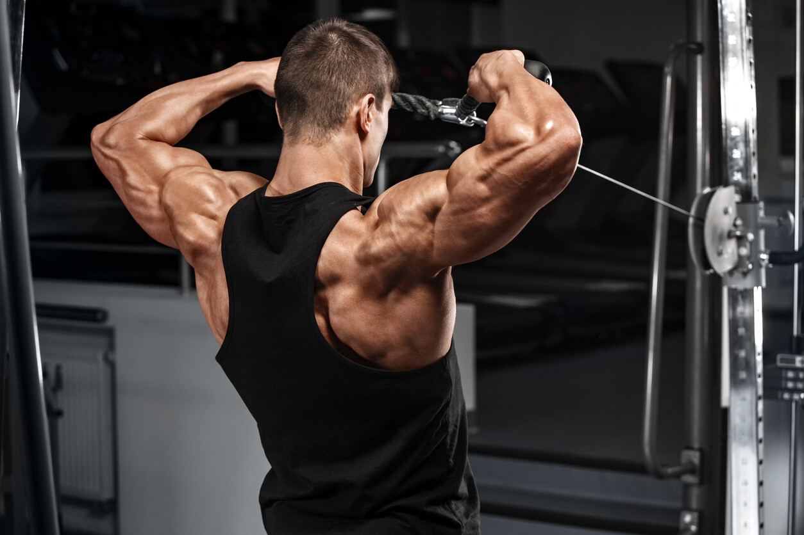

DELTOIDE POSTERIOIR
El deltoides posterior es uno de los tres músculos que componen el deltoides, ubicado en la parte trasera del hombro. Es la sección del hombro implicada en las funciones de "jalar" junto con los músculos de las espalda y los bíceps, teniendo este presente el deltoides se estimula bastante en ejercicios como dominadas y remos. Este músculo es indispensable para mantener una buena postura, siendo la falta de fortaleza de este músculo lo que conlleva a tener "hombros adelantados" por lo que es importante prestarle la misma atención que le prestamos a los otros músculos deltoides para mantener una buena armonía.
Remo T
Este es sin dudas el mejor ejercicio para hipertrofiar y fortalecer los deltoides posteriores debido a que el movimiento implicado le permite levantar más peso que el otro ejercicio de la lista e implica un movimiento más natural a diferencia. Sin dudas el Remo T es un ejercicio que debería ser incluido en tu rutina si necesitas fortalecer tu deltoides posterior. Si no dispones de esta máquina puedes hacer un remo en polea con una barra y un agarre amplio, llevando la barra al pecho.

Face Pull
Este ejercicio es ideal para trabajar los deltoides posteriores y desde un ángulo diferente al remo T o remo con polea al pecho favoreciendo al desarrollo del músculo. Debido al movimiento que hacen los codos al contraer (al realizarlo como la mayoría lo suele hacer) el Face Pull puede ser un ejercicio perjudicial para la salud de tus articulaciones si se realiza de forma errónea. Te recomiendo ampliar la distancia entre las manos y la cabeza abirendo los brazos al contraer, no llevando las manos a la cara como dice el nombre del ejercicio.
